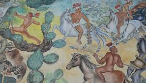
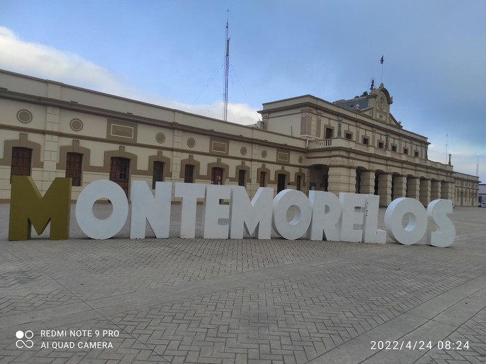

La Capital de la Naranja
A solo 70 km de Monterrey, Montemorelos (65,000 hab.) es el corazón agrícola del estado. Conocida como "La Capital de la Naranja", su clima subtropical y paisajes de huertos contrastan con la aridez metropolitana. Conserva el encanto provinciano en su centro histórico, mercados rebosantes de cítricos y tradiciones como la Feria de la Naranja.
Construcción de Identidad
Herencia Indígena

Mientras Monterrey avanza hacia la modernidad, Montemorelos conserva huellas de los pueblos originarios como los Guachichiles y Rayados, nómadas expertos en cacería y recolección. Persisten rasgos culturales como el uso medicinal de plantas nativas y tradiciones orales que mezclan elementos prehispánicos con la cultura mestiza.
Cultura Juvenil

Los jóvenes montemorelenses fusionan acordeones con sintetizadores en la Feria de la Naranja. La Casa de la Cultura "Citricultura Joven" impulsa talleres desde mermeladas tradicionales hasta producción audiovisual con drones. Antiguas bodegas se convierten en espacios para batallas de rap con letras sobre vida campirana.
Diversidad Sexual

La primera Marcha de la Diversidad en 2022 marcó un hito. El Café Naranja es punto de encuentro seguro durante el festival "Citricultura Diversa". Colectivos como Arcoíris Citrícola trabajan para implementar políticas de no discriminación en campos de cultivo.
Manifestaciones Culturales
Música y Tradición

Los acordeones y bajos sextos interpretan melodías que imitan el sonido del viento entre naranjales. La Parroquia de San Mateo fusiona arte sacro con identidad local en sus vitrales con escenas de cosecha.
Artesanías

En la calle Hidalgo, artesanos transforman cáscaras de cítricos en velas aromáticas y confituras, innovando sobre técnicas ancestrales.
Gastronomía Emblemática
Sabores Citrícolas

El cabrito al pastor se aromatiza con jugo de naranja. Las conservas cristalizadas transforman frutas en joyas dulces. El agua de toronja con hierbabuena refresca las mañanas calurosas.
Feria de la Naranja

En octubre, la feria ofrece platillos innovadores como enchiladas con salsa de mandarina o helados de toronja con chile piquín. Productores compiten por el título de "La Naranja Dorada".
Turismo Cultural
Leyendas Locales

La leyenda del "Fantasma del Huerto" narra la aparición de un antiguo capataz que protege los naranjales. Inspiró recorridos turísticos con narraciones dramatizadas y degustaciones.
Palenque Citrícola

Corazón de la Feria de la Naranja, donde grupos musicales fusionan acordeones con ritmos modernos bajo las estrellas.